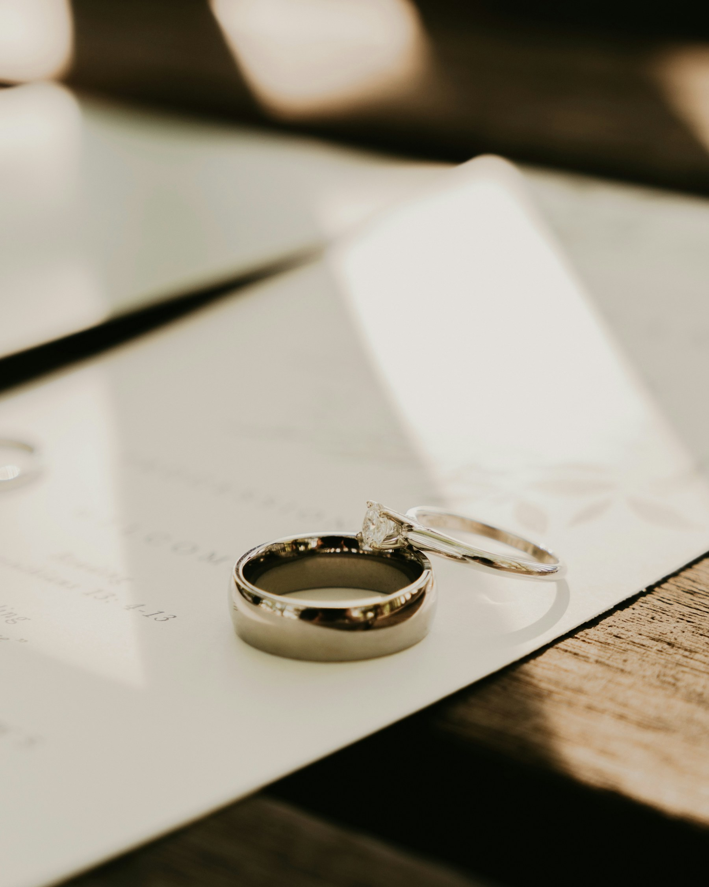

02 / The collection
Six, eight,
or ten hours?
Work backward from the last moment you want photographed, then check what fits before it.
Alex Claudio Photography / Planning notes
Start with the first moment you want photographed and the last one you would be disappointed to miss.
That might mean getting dressed through the first dance, or the ceremony through the final song. The hours between them tell you more than a package called “full day.”
Our collections include six, eight, or ten consecutive hours, with both of us photographing throughout the booked coverage.
Part 1 of 2
Choose your hours
Put your priorities on the schedule
Each of you should name a few things you want to remember. Include people as well as events: getting ready with friends, time with a parent, or relatives who rarely share a room.
Place those moments on your draft schedule. Allow time for us to arrive and prepare, and leave room at the end for dinner or speeches to run late.
A letter exchange at 1 p.m. and a dance at 10 p.m. are nine hours apart. To photograph both, you would need longer than eight hours or a change to the schedule. Make that choice before booking, while the timing is flexible.
Six hours for a focused stretch of the day
Six hours can work when the main events happen close together and there is little travel between preparations, ceremony, and reception.
A 2–8 p.m. booking might include final preparations, a 4 p.m. ceremony, portraits, dinner, and early reception events. Check that each event fits, including the time needed to gather people for photographs.
You may be happy to leave the morning or late dancing unphotographed. A small guest list alone will not shorten a long ceremony or the drive between venues.
Eight hours from preparations into the reception
For a 1–9 p.m. booking, check whether you will be getting dressed after 1 p.m. and whether the reception events you want photographed finish before 9 p.m.
A first dance scheduled for 8:55 p.m. leaves almost no room for dinner or speeches to run late. Move the coverage window or allow more time if that photograph matters to you. You can keep celebrating after the cameras leave; agree beforehand on which events we will cover.
Ten hours for a longer day
Consider ten hours when you want earlier preparations and later reception photographs, or need time for several locations, outfit changes, or a longer ceremony.
Noon–10 p.m. and 2 p.m.–midnight are both ten-hour bookings. Choose the start and finish around your plans and confirm them in the proposal. A welcome dinner on another date or an after-party outside those hours needs a separate conversation.
Part 2 of 2
Check what the collection includes
How two photographers use the time
Both of us work within the same booked window. An eight-hour collection gives you two photographers for those eight consecutive hours.
When access and timing allow, we can photograph separate preparations or have one of us with guests while the other takes portraits. We still need time to move and gather people. If you are taking portraits elsewhere, those are minutes you will spend away from cocktail hour.
Travel and gaps during our coverage count toward the booked hours. Ask how other photographers handle them when comparing proposals.
Compare hours, albums, and sessions
Both photographers are included for the full wedding coverage in each collection.
| Wedding coverage | Collection price | Album and engagement session |
|---|---|---|
| 6 consecutive hours | $4,000 | Digital collection; an album and engagement session can be added by request. |
| 8 consecutive hours | $5,700 | Custom-designed 10 x 10-inch leather album with 15 spreads / 30 pages. Engagement session available as an addition. |
| 10 consecutive hours | $7,500 | Custom-designed 12 x 12-inch leather album with 20 spreads / 40 pages, plus a 60-minute engagement session. |
Prices are in USD. Your proposal lists applicable tax, travel, and additions before booking. Check the collection page for current prices and inclusions.
The collections include different albums and engagement sessions, so comparing their prices as hourly rates leaves out part of what you receive. Choose the hours your day needs, then consider the album and session options.
Bring a rough plan
You can inquire before the timeline is finished. Send us your date, venues, and ceremony time if known, along with the first and last moments you want photographed. Mention travel, religious or cultural events, and any fixed timings so we can work through the coverage with you.